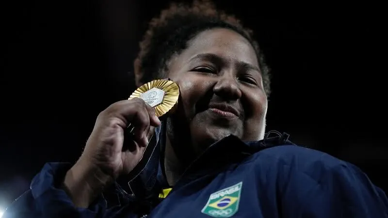
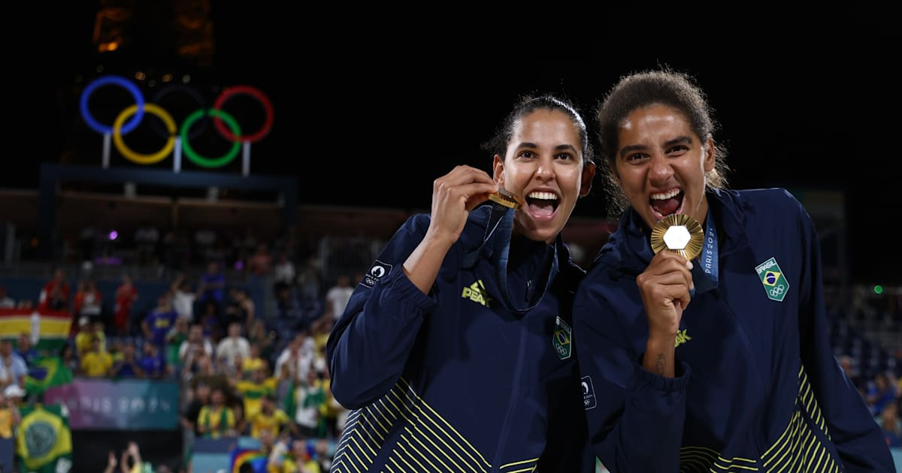

Antes de falarmos da seleção brasileira nos Jogos Olímpicos de París 2024, primeiramente devemos saber um pouco sobre a edição de 2024 realizada na capital da França,
algumas informações sobre os Jogos Olímpicos de París 2024:
As Olimpíadas de Paris 2024 foram realizadas em Paris entre 26 de julho e 11 de agosto e contaram com mais de 10 mil atletas em 48 modalidades esportivas.Paris foi definida como sede das Olimpíadas de 2024 no ano de 2017, durante assembleia do Comitê Olímpico Internacional (COI) realizada em Lima, no Peru. Além disso o mascote dos jogos é a Phryge, um barrete frígio (espécie de gorro) que remete à Revolução Francesa. Um dado interessante é que mais de 210 atletas brasileiros participação da edição de 2024, em Paris.
Dentre as várias modalidades presentes nos Jogos de París 2024 podemos citar:
Futebol;
Vôlei;
Vôlei de Praia;
Surfe;
Judô.
Brasil e sua participação nos Jogos Olímpicos de París 2024:
Brasil encerrou sua participação nos Jogos Olímpicos de Paris 2024 com 20 medalhas, a segunda melhor marca da história. Foram três ouros, sete pratas e dez bronzes, que colocaram no 20º lugar do quadro de medalhas. Pelo total de pódios, o País terminou em 12º. Na França, a delegação brasileira fez história com as mulheres, encerrou jejuns e conquistou medalhas inéditas. Pela primeira vez, elas superaram os homens e conquistaram mais medalhas em uma edição de Jogos Olímpicos. Das 20 medalhas conquistadas, 12 foram em competições femininas, além de uma por equipes mistas, no judô. Os homens conquistaram sete.
Abaixo está o quadro de medalhas do Brasil nas Olímpiadas de París 2024:
OURO
PRATA
BRONZE
TOTAL
3
7
10
20
Para detalhar o quadro de medalhas, as modalidades que a seleção brasileira conquistou medalha e os atletas que tiveram as conquistas foram respectivamente:
Modalidades:
Atletismo
Boxe
Canoagem
Futebol feminino
Ginástica Artística
Judô
Marcha atlética
Skate park
Skate street
Surfe
Taekwondo
Vôlei de praia
Vôlei de quadra
Atletas:
Ana Patrícia e Duda: ouro🥇 no vôlei de praia
Beatriz Souza: ouro🥇 no judô (mais de 78kg)
Rebeca Andrade: ouro🥇 no solo da ginástica
Caio Bonfim: prata🥈 na marcha atlética 20km
Futebol feminino: prata🥈
Isaquias Queiroz: prata🥈 na canoagem C1 1000m
Rebeca Andrade (duas): pratas🥈🥈 no individual geral e no salto da ginástica artística
Tatiana Weston-Webb: prata🥈 no surfe
Willian Lima: prata🥈 no judô (até 66kg)
Alison dos Santos: bronze🥉 nos atletismo/400m com barreiras
Augusto Akio: bronze🥉 no skate park
Bia Ferreira: bronze🥉 no boxe peso leve
Edival Pontes (Netinho): bronze🥉 no taekwondo (até 68kg)
Gabriel Medina: bronze🥉 no surfe
Ginástica artística feminina: bronze🥉 na disputa por equipes
Judô: bronze🥉 na disputa por equipes mistas
Larissa Pimenta: bronze🥉 no judô (até 52kg)
Rayssa Leal: bronze🥉 no skate street
Vôlei de quadra feminino: bronze🥉


Abaixo se encontra o link para o vídeo dos atletas ganhando as medalhas.